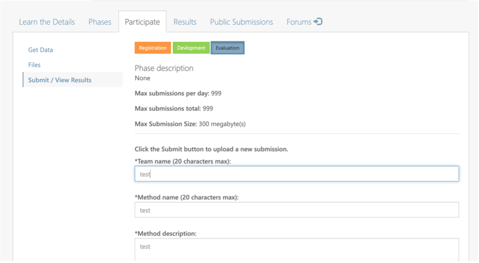
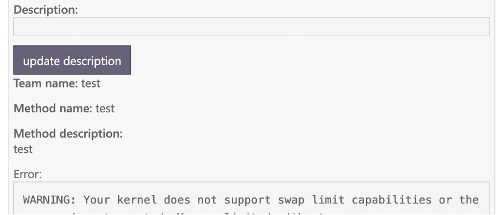
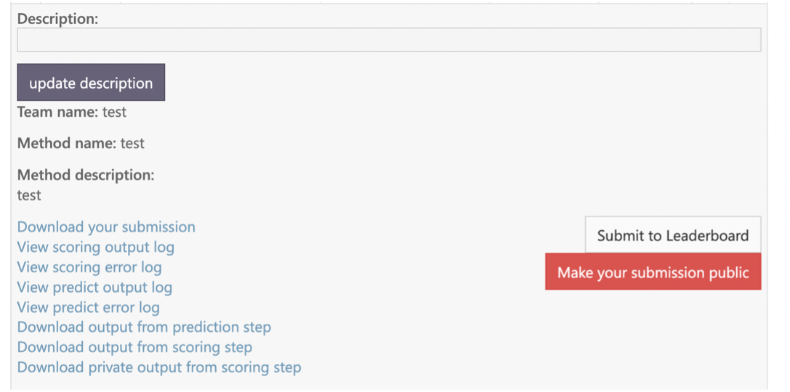
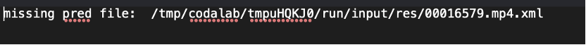

Updates and News
Big News !!! The top 3 teams in each track will receive cash rewards. The details of the rewards are as follows: Top-1: 3000$, Top-2: 1500$, Top-3: 800$. See more details of ranking rules in Evaluation .
Issues and Questions
For any questions, please send an email to lattehuang@tencent.com.
You can also join our WeChat group by scanning the code below:
提交指南
现CodaLab网站已经可以开放提交结果啦, 参赛选手们可以按照以下步骤提交比赛结果:
第一步, 登录CodaLab网站, 点击Participate submit/View Results填写相关信息,
Team Name/Method Name/Method description可根据自己的想法填写。

第二步, 上传自己的结果文件,要求结果文件压缩为zip文件。对于任务一, Zip文件应包含xml文件,
每个xml文件表示对应视频的预测结果。其中, xml文件命名规则为, 例如视频为00001.mp4, 则xml文件应为00001.mp4.xml。
其中xml文件的具体内容见官网(icprmsr.github.io)或者Codalab网站。任务三与任务一类似。
任务二要求所有预测结果放入一个txt文件当中, txt文件内容详见官网或者网站。
在上传结果当中, 如果存size(BYTES)大小为0, 可能为网速问题导致上传未成功, 建议再次上传。
第三步, 如果上传成功, 则接下来会显示Failed/Finished两个状态。
如果是Finished状态, 则表示结果已经计算, 通过Score一列查看自己的成绩。
一般从Submitted->Finished会花费1-5分钟。如果STATUS为Failed, 点击右边的加号, 查看错误原因。
也可通过以下几个文件查看具体原因。

Download your submission
View scoring output log
View scoring error log
View predict output log
View predict error log
Download output from prediction step
Download output from scoring step
Download private output from scoring step
第四步, 如果状态已经变为Finished, 可以选择是否将自己的成绩公布在Leaderboard上或者公开。
其中, Leaderboard上的Difference表示CER的结果。

注意: 如果结果值为1, 则可能是Zip文件没有包含所有视频的结果, 点击output log可以看到以下的内容:

Zip文件要包含所有视频的字幕预测结果。
比赛第一周内(4.23-4.30)不限定提交次数, 之后每天限定(4.30-5.9)提交5次。
Evaluation
Subtask 1
Annotations: The subtitles from the visual modal, in the format of the start frame,
end frame, and the content of each subtitle.
Prediction: Participants need to predict the subtitle information in the video frame,
remove repeated subtitles in adjacent consecutive frames,
and provide the start frame and end frame of the subtitle. The submitted predicted subtitle file should be the format of xml file.
Evaluation: For each subtitle in the ground-truth, we find from the predicted results with the largest tIoU and tIoU >= 0.5
as the matched prediction, calculating the cer between the characters. If no prediction can be matched, then this subtitle is missing,
the corresponding cer is 1. Later, for the remaining preditions, if one has a tIou >= 0.5 with a ground-truth subtitile,
but is not the best match in the previous step, it will be regarded as a false detection, and the cer is 1.
The final cer is the average of all the cer numbers.
Subtask 2
Annotations: The subtitles contain in the audio.
Preditions: Participants need to give all the subtitle information in the audio.
The format of the submitted prediction file is required to be the txt format.
The name of txt files must be the same with the video name.
For example, if the video name is "000001.mp4", the name of txt file needs to be "000001.txt".
Evaluation: The CER between the predicted subtitle and the ground truth is calculated to evaluate our models.
Number, mathematical symbol conversion standard:
(1) Uniformly standardize Arabic numerals as digital representations of Chinese characters. For example the audio content is “一千一百一十五点八” and the standard output is “一千一百一十五点八” instead of 1115.8.
(2) Standardize the percent sign into Chinese characters. For example the audio content is “百分之六十六”, and the standard output bits are “百分之六十六”, not 66%.
Subtask 3
Annotation: The subtitle information in the video is provided by the audio and visual modalities.
Specifically, when both the audio and visual modality contain subtitles,
the subtitles are from two modalities.
For example, when the subtitle from the visual modal is "ICPR MSR competition"
and the subtitle from the audio modal is "ICPR ICPR MSR competition" .
Then, the final subtitle is "ICPR ICPR MSR competition".
Second, when only the visual modal contains subtitles,
we employ the subtitle from the visual modal as the ground truth.
Third, when only the audio modal contains subtitles,
we employ the subtitle from the audio modal as the ground truth.
Predictions: Participants need to predict all subtitles in the video.
The format of the submitted prediction file is required to be the xml format.
The name of xml files must be the same with the video name.
For example, if the video name is "000001.mp4", the name of xml file needs to be "000001.xml".
Evaluation: Participants need to concat all the subtitles in order of time.
The CER between the predicted subtitle and the ground truth is calculated to evaluate the models.
评测方案
任务一
任务一要求: 输入视频,进行抽帧(为确保分帧的ID信息能够对齐,最好使用主办方提供的抽帧代码),预测视频帧中的字幕信息。
真实标注: 视频帧中的字幕信息,格式为每条字幕的起始帧,结束帧,字幕内容。
预测: 参赛选手,需要预测视频帧中的字幕信息,并且对相邻连续帧中的重复字幕进行去重,并且给出字幕的起始帧和结束帧。
提交的预测字幕文件为xml文件, 具体可见百度网盘或者腾讯微云链接。命名需要视频名字相同,例如,视频名为:00001.mp4, 则提交的xml
文件名为00001.mp4.xml。
评测: 首先遍历真实标注中的每一条字幕,并且与预测字幕信息计算tIOU(时间交并比),
匹配tIoU最大并且>=0.5的预测结果,计算cer. 如果不存在,则该条字幕未被正确命中,该条字幕CER为1。
同时,对于预测字幕,若与某条真实字幕的tIoU>=0.5但不是最大的预测,视为误检,cer = 1.
最后,所有的CER加和求平均作为输入视频的CER结果。
任务二
任务二要求: 输入音频,输出音频内的字幕信息。
真实标注: 音频中的所有字幕信息。
预测: 参赛选手需要给出该段音频中的所有字幕信息。提交的预测字幕文件为txt文件,格式要求与上述真实字幕一致。
需要包括两部分信息: 视频名称、文本内容,视频名称与提供的音频名称相同(不加后缀),如音频"00016253_00000.mp4",对应VIDEO_NAME为"00016253_00000"。
视频名称与文本内容需要用空格间隔开。
评测: 预测的字幕信息与真实的字幕信息两个文本之间计算编辑距离，最终的评价指标为cer, 即所有视频的编辑距离之和除以真实文本长度。
数字、数学符号转换标准:
在参赛选手的预测字幕文件中,要求
第一、将阿拉伯数字统一规范为汉字的数字表达。例如音频内容是"一千一百一十五点八",标准输出为"一千一百一十五点八",而不是1115.8。
第二、将百分号统一规范为汉字。例如音频内容是"百分之六十六", 标准输出位"百分之六十六", 而不是66%。
任务三
任务三要求: 输入视频, 输出视频内的字幕信息。
真实标注: 视频中的字幕信息, 以两个音频和视觉模态共同提供的字幕信息为准。具体为,
第一, 当该时间段内音频模态和视觉模态都含有字幕信息时, 取得是两个模态中提供的字幕信息的并集。
例如, 第0到1秒, 音频模态提供的字幕信息是“我们 我们是某某某”, 而视觉模态提供的字幕信息是“我们是某某”, 则第0到1秒的字幕信息为-“我们 我们是某某某”。
第二, 当该时间段内只含有音频模态提供的字幕信息, 则以音频模态提供的字幕信息为准。
第三, 当该时间段内只含有视觉模态提供的字幕信息, 则以视觉模态提供的字幕信息为准。
预测: 参赛选手需要给出该段视频中的所有字幕信息。
每段视频须对应一个单独的预测字幕文件, 命名需与视频名字相同, 如上所述, 具体可见百度网盘或者腾讯微云链接, 格式要求与上述真实字幕一致。不要求时间一致。
评测: 首先, 分别对每个视频文件中的不同时间段内的字幕按照时间顺序进行合并,
合并成一个含有该视频中所有字幕的文本。参赛选手预测的字幕信息, 也将按照时间顺序合并成一个含有该视频中所有字幕的文本。
之后, 两个文本之间计算编辑距离，最终的评价指标为cer, 即所有视频的编辑距离之和除以真实文本长度。
FAQ
OCR Pretrain Models
In this competition, it is limited to use the pre-trained models of ImageNet and Bert,
and models fine-tuned via other downstream tasks cannot be used.
Furthermore, this competition allows OCR models to be trained
using open source datasets LSVT and chinese_ocr, respectively.
Among them, the training set data of Chinese_ocr can be used up to 10,000.
Image Synthetic Data
For images, the corpus of the corresponding task we provide can be used to synthesize the image data.
ASR Pretrain Models
The pre-trained model of wav2vec is allowed to use, but the link to the pre-trained model is required.
The pre-trained models are limited to models open sourced by facebook
(but not limited to which ones to use): https://huggingface.co/facebook.
Furthermore, this competition allows ASR models to be trained using open source datasets Aishell1.
Aishell1 can only use up to 150 hours of training set, test set and validation set cannot be used.
Audio Synthetic Data
The voice data synthesized by TTS cannot be used.
Frame Rate
When providing weakly supervised annotation, it is taken at 5 frames per second,
and the frame id corresponds to the id of the original frame rate.
The corresponding timestamp can be found according to the frame id.
Traditional and Simplified Characters
The Chinese traditional and simplified characters are treated as the same label.
Code
On the validation set of the three tasks, respectively, the top 10 are selected, and the model is further evaluated on the test set.
The top three teams in the final are required to submit training code and test code after the competition.
Can the data of the three tasks be used with each other?
No!
Registration
We use CodaLab for the registration.
The sites for registration are subtaks1, subtaks2,
subtaks3.
If you do not have the account of CodaLab, please create an account.
Here, we provide an example to help participants to complete the registration of the subtask1.
Step 1: Click the subtask1.

Step 2: Click the button Participate.

Step 3: Accept the terms and conditions.

Step 4: Click the button Register.

Then, the website turns to:

It means that you are successfully completing the registration.
Subtask2 and Subtask3 are the same as Subtask1.
And we will process your registration as soon as possible.
Upon we accept your registration, you will see the link for the training data.

Submission
We use CodaLab for online submission in the development phase. Here, we provide an example to help participants to format their submissions. The sites are for the subtask1 , subtask2 and subtask3, respectively.
Introduction
In recent years, with the rapid rise of short videos, live broadcastsand other media-based applications, the widespread transmission of video data has led to a significant increase in user-generated content. A wide variety of creative platforms and pattern have emerged, and media publication criteria is becoming more and more civilian, leading to more complex and dynamic acoustic scenes in various long or short video and live streaming. The problems of video subtitle recognition and speech recognition under various scenarios have been of considerable concern by researchers. The development of methods accurately recognize and understand various types of video content has become an indispensable tool in downstream applications such as subtitle creation, content recommendation, digital media archival, and so on. In this challenge, we focus on extracting subtitles from videos using both visual and audio modalities. Most previous works exploit it with a single modality , and each modality has its own advantages and annotation difficulties on various types of training data. To this end, we present tasks that explore the integration of the advantages of both video and audio modalitioes. We expect to obtain high precision subtitles with lower annotation costs, thus expanding the scope of practical applications.
Description of the Challenge
Subtask 1: Extracting subtitles in visual modality with audio annotations
To extract subtitles from video frames, a large number of keyframes should be
annotated with bounding boxes and contents, which is extremely costive. However,
speech transcripts are much easier to obtain, and they contain almost all the content of
the subtitles. In this subtask, we present a challenge that explores learning visual
subtitles with the supervision of speech scripts. We expect that the annotation from
the audio modality can improve the subtitle extraction from the visual modality.
In this subtask, we will present 75h of video content, divided into set of 50, 5, 20 as
training, validation, and testing sets, respectively. For the training set, only audio
annotations will be provided. The participants are required to design subtitles OCR
system with these annotations. To pretrain an OCR system, participants can also use a
limited number of open datasets, and fine-tune their model with audio supervision.
Under these conditions, will be asked to produce subtitle text for each video in our
testing set, and the submitted results will be ranked using the CER metric.
The site for the submission is subtask1.
Subtask 2: Extracting subtitles in audio modal with visual annotations
In speech recognition tasks, especially in video speech recognition tasks, audio data
are difficult to label owing to background music, sound effects, or noise. However, all
texts information including subtitles in the video can supply weakly labeled
information.
There are lots of videos with subtitles. Some texts information including
subtitles are manually generated, whereas some are automaticly generated.
Although the quality of automatic subtitles may be worse than that of manual subtitles, they are
often available in much greater quantity.
Therefore, this task considers the use of
visual annotations in videos, especially automatic annotations to assist in building an
ASR system.
In this subtask, the participants will be required to use only visual annotations to
build an ASR system for the corresponding videos. To improve the robustness, some
public ASR data in the following tables may be used as well. We will also provide a
baseline model. The submitted results will be ranked with the CER metric on our
testing set.
The site for the submission is subtask2.
Subtask 3: Extracting subtitles with both visual and audio annotations
In this subtask, for the training set, we present 50 hours of video content with both the
visual and audio supervisions and 200-hour video content with no annotation.
Another 20 and 5 h of videos will be provided to serve as validation and testing sets, respectively.
For the visual annotation, we will provide characters of all text in key frames, we will present speech transcripts of
each VAD segment or the audio modal. With these data, participants will be required to produce
subtitle for each video in our testing set, and the submitted results will be ranked with
the CER metric.
The site for the submission is subtask3.
Datasets
We present a large-scale video dataset with 75 hours of video content, among which 50/5/20 hours are used for training, validation, and testing, respectively. Both visual (weak) and audio annotations are provided. Moreover, additional 200-hour unlabeled video content is provided as an unsupervised training resources.
Visual annotation:
For each video, we will provide pseudo-subtitles along with their locations and
timestamps. In the creation stage, our video OCR system results are generated and
corrected in combined with ASR ground truth labels as follows:
Step 1: We extract five frames per second from videos, and then detect and recognize
the text in the frames with the high-precision TencentOCR systems. We save all the
text lines as the visual annotations, and they are used for the subtask 2.
Step 2: To identify the subtitle text, we compare the OCR results with the ASR
ground truth to determine which text lines belonge to the subtitles, and take the
corresponding bounding boxes, and recognized text as the subtitle pseudo-
annotations.
The location is presented as a bounding box with the coordinates of the four
corners. The timestamp can be obtained with the frames per second (FPS) of the video
and the index of each frame.
The annotation has the following format for a subtitle:
{
"video_name": video_name,
"frame_id": frame_id,
"bounding_box": bounding_box,
"text": text,
}.
For example, for a video named "TV_00000001", all of the texts in a frame, including one subtitle in the red box, has annotations shown belows :

{
"video_name": "TV_00000001",
"frame_id": 100,
"content": {
"text":"BTV",
"text":"北京同仁堂",
"text":“冠名播出”,
"text": "都放在你这个手指的动作上面", },
}.
Audio annotation:
For each audio clip, we will provide their text and segment file in terms of the KALDI
format (https://kaldi-asr.org/doc/data_prep.html). The segment file is the start and end
time of VAD segments for each audio clip.
text: TV_00000001 都 放在 你 这个 手指 的 动作 上面
segments: TV_00000001 TV 0 3.259
wav.scp: TV_00000001 TV.wav
Evaluation
The participants are required to output non-repeating subtitles and concatenate them
for each video. For a given video, subtitles of adjacent frames may be the same, and
the participants are required to deduplicate them and output subtitles. CER will be treated as
the official ranking metric.
On March 12, organizers provide the training set with annotations. Each task has 50 hours of video data.
Participants are required to develop corresponding models according to the requirements of each track.
On April 22, the organizers will provide the validation set without annotations. And each track contains 20 hours of video data.
Participants predict subtitles of each video, and submit the prediction results to the CodaLab website.
The organizers will give the ranking on the validation set according to the prediction result.
On May 7th, the organizers will provide the test set (including 5 hours of video data) without annotations.
It is required that the top ten participants of each track in the validation set be within two days (that is, before May 9th).
According to the video data in the test set, top ten participants on the validation set are required to predict the subtitles in the video,
and submit the prediction results to the CodaLab website.
Finally, the final rank of each track = 50% * rank on the validation set + 50% * rank on the test set .
The test set will be announced on the official website (icprmsr.github.io) after May 9,
and the final ranking information of the participants will also be announced on the competition website,
and the participants will be notified by email.
Deadlines
| Milestone | Date |
| Registration period | Mar 7, 2022 - |
| Data release | Mar 12, 2022 |
| Development period | Mar 12, 2022 - Apr 22, 2022 |
| Evaluation period | Apr 22, 2022 - May 7, 2022 |
| Release of evaluation dataset | Apr 22, 2022 |
| Deadline for submission of results | May 7, 2022 |
| Deadline for submission of method descriptions | May 12, 2022 |
| Announcement of evaluation results | May 13, 2022 |
| Competition paper submission | May 20, 2022 |
Contact information for the organizers
Shan Huang, Tencent, lattehuang@tencent.com
Shen Huang, Tencent, springhuang@tencent.com
Li Lu, Tencent, adolphlu@tencent.com
Pengfei Hu, Tencent, alanpfhu@tencent.com
Xiang Wang, Tencent, andyxwang@tencent.com
Jian kang, Tencent, jiankang@tencent.com
Lianwen Jin, South China University of Technology, eelwjin@scut.edu.cn
YuLiang Liu, Huazhong University of Science and Technology, ylliu@hust.edu.cn
Yaqiang Wu, Lenovo, wuyqe@lenovo.com